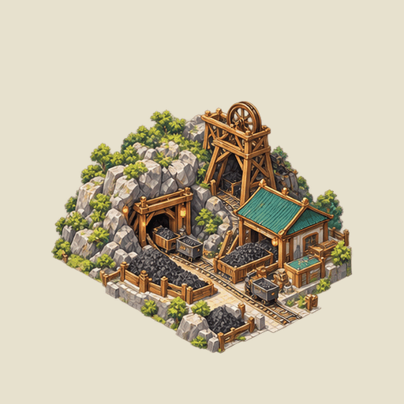
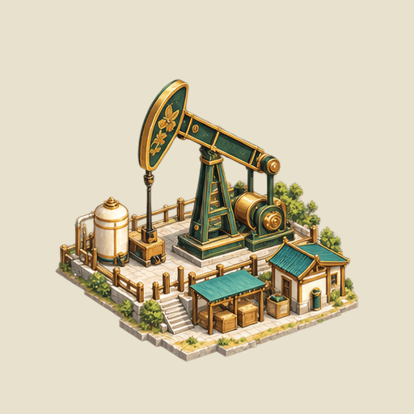
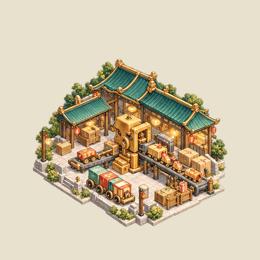
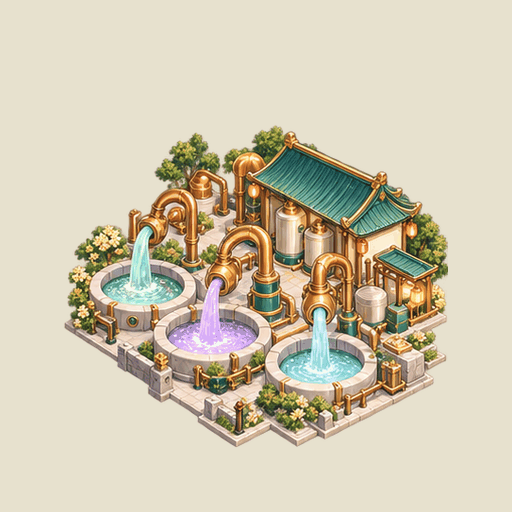
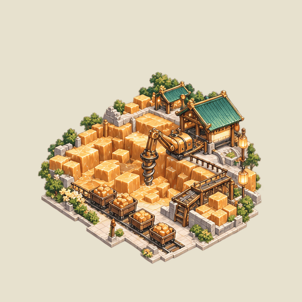
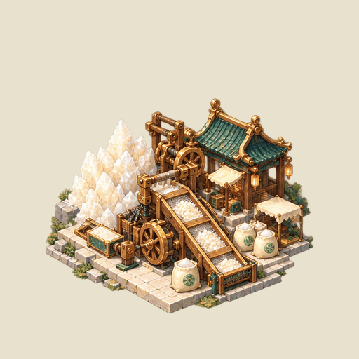
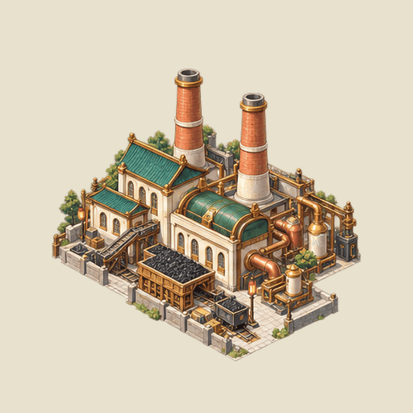
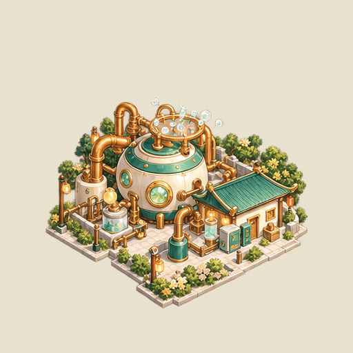

industry-mine-winding-wheel

actual winding-wheel interior rotation; original copper rim and tower stay fixed
父体 industry-00-coal-mine
512×512 · Anchor[256,448] · Offset[0,0] · Scale1

actual winding-wheel interior rotation; original copper rim and tower stay fixed
父体 industry-00-coal-mine
512×512 · Anchor[256,448] · Offset[0,0] · Scale1

actual pump beam and complete horsehead Alpha, short +/-1.25deg pivot stroke; fixed support and lift rods retained
父体 industry-11-oil-well
512×512 · Anchor[256,448] · Offset[0,0] · Scale1

actual internal gear in the open assembly-head cavity; housing remains fixed; supplementary detached press jaw is not overlaid
父体 industry-31-toy-factory
512×512 · Anchor[256,448] · Offset[0,0] · Scale1

three actual native painted liquid columns: in-place material flow; pipes, reservoirs and stream boundaries fixed
父体 industry-32-plastic-fountains
512×512 · Anchor[256,448] · Offset[0,0] · Scale1

actual visible auger material/coil stroke inside fixed drill housing; support does not bob
父体 industry-35-toffee-quarry
512×512 · Anchor[256,448] · Offset[0,0] · Scale1

actual sugar grains on the parent conveyor/sieve batches, small internal sifting motion; wooden rails fixed
父体 industry-36-sugar-mine
512×512 · Anchor[256,448] · Offset[0,0] · Scale1

actual shared electric-spark paintings downsampled at the visible right-hand copper transformer; active pulse only, source inactive state draws no overlay
父体 industry-01-power-station
512×512 · Anchor[256,448] · Offset[0,0] · Scale1

three baked floating bubble silhouettes removed from parent Alpha; existing shared bubble generation/float/burst paintings emit above the actual vessel rim, rise and burst; small fixed foam in vessel stays static
父体 industry-34-bubble-generator
512×512 · Anchor[256,448] · Offset[0,0] · Scale1